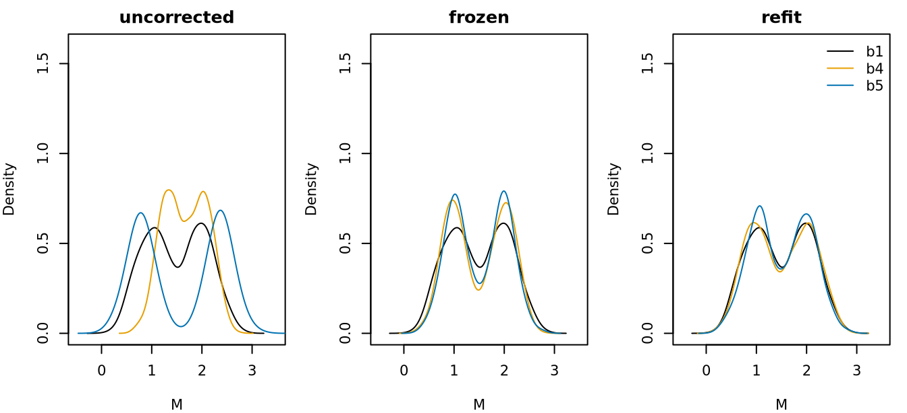

Use case 3: Correct later batches with a frozen model
In this vignette, you learn how to correct batches that arrive after the model was fitted, without changing earlier corrections.
Longitudinal clinical studies run for months or years. Samples are measured as subjects come in, and an interim analysis often starts before the last batch is measured. If every new batch changed the correction of earlier ones, every interim result would have to be redone. A bridgenorm model is frozen: bn_apply() corrects a new batch from its own bridge wells, against the anchor summaries stored in the model, and leaves the earlier batches exactly as they were.
The price is that a late batch gets node shifts only, not quantile maps: the maps need the batch’s bridge cells at fit time. For the final analysis, refit on all batches.
Prepare the bridgenorm normalization step
Five batches each hold two bridge wells of one reference donor and two study samples. Batches b1 to b3 are measured first; b4 and b5 arrive later. Each batch shifts and stretches marker M by its own amount in each cell state.
set.seed(3)
batches <- paste0("b", 1:5)
centre <- c(A = 2, B = 1)
lin <- c(A = 1, B = 4)
effect <- lapply(setNames(batches, batches), function(b) {
if (b == "b1") {
return(list(shift = c(A = 0, B = 0), scale = 1))
}
list(shift = c(A = rnorm(1, 0, 0.3), B = rnorm(1, 0, 0.3)), scale = exp(rnorm(1, 0, 0.2)))
})
samples <- data.frame(
sample_id = c(outer(c("ref1", "ref2", "s1", "s2"), batches, paste, sep = "_")),
batch = rep(batches, each = 4),
reference_id = rep(c("donor", "donor", NA, NA), 5),
aliquot = rep(c("ref1", "ref2", NA, NA), 5)
)
cells <- do.call(rbind, lapply(seq_len(nrow(samples)), function(i) {
b <- samples$batch[i]
do.call(rbind, lapply(c("A", "B"), function(k) {
truth <- rnorm(300, centre[[k]], 0.3)
data.frame(
sample_id = samples$sample_id[i],
Lin = rnorm(300, lin[[k]], 0.2),
M = centre[[k]] + effect[[b]]$scale * (truth - centre[[k]]) + effect[[b]]$shift[[k]],
truth = truth
)
}))
}))
cells$batch <- samples$batch[match(cells$sample_id, samples$sample_id)]
study <- is.na(samples$reference_id[match(cells$sample_id, samples$sample_id)])
early <- cells$batch %in% c("b1", "b2", "b3")Train the bridgenorm model on the early batches
fit <- function(rows) {
bn_fit(
x = cells[rows, c("sample_id", "Lin", "M")],
samples = samples[samples$batch %in% cells$batch[rows], ],
population = rep("T", sum(rows)),
markers = c("Lin", "M"),
transform = list(name = "asinh", cofactor = 5),
anchor = "b1",
grid = c(2, 1),
mapping_markers = "Lin",
seed = 1,
train_cells = 300,
rlen = 50
)
}
model <- fit(early)
path <- tempfile(fileext = ".rds")
bn_save(model, path)Apply the bridgenorm model
Interim analysis
Later batches arrive
The saved model is loaded and applied to all batches. The new batches b4 and b5 get effects estimated from their own bridge wells against the frozen anchor summaries.
model <- bn_load(path)
later <- bn_apply(model, cells[, c("sample_id", "Lin", "M")], samples, rep("T", nrow(cells)))
unique(later$actions[later$actions$batch %in% c("b4", "b5"), c("batch", "pass", "reason_code")])
#> # A tibble: 4 × 3
#> batch pass reason_code
#> <chr> <int> <chr>
#> 1 b4 1 estimated_new_batch
#> 2 b5 1 estimated_new_batch
#> 3 b4 2 estimated_new_batch
#> 4 b5 2 estimated_new_batchThe earlier batches keep exactly the values of the interim analysis:
identical(later$x$M[early], interim$x$M)
#> [1] TRUElater$model is the model extended with the effects of the new batches. It has a new digest and records the old one as its parent, so every correction can be traced to the model that made it.
c(parent = later$model$parent_digest, digest = later$model$digest)
#> parent digest
#> "0cc184d08d567feae1f44db817baa7af" "6d5147388747db106a9b90b14e523560"Evaluate the quality
The error of the study cells against their values without the batch effect, per batch, for the frozen model and for a refit on all five batches. The frozen model corrects b4 and b5 with node shifts only, so it can leave more of a batch effect that changes the shape of a distribution than the refit, which builds quantile maps for them too.
refit <- bn_apply(fit(rep(TRUE, nrow(cells))), cells[, c("sample_id", "Lin", "M")], samples,
rep("T", nrow(cells)))
error <- function(v) tapply(abs(v[study] - cells$truth[study]), cells$batch[study], mean)
round(rbind(
uncorrected = error(cells$M),
frozen = error(later$x$M),
refit = error(refit$x$M)
), 3)
#> b1 b2 b3 b4 b5
#> uncorrected 0 0.188 0.202 0.198 0.303
#> frozen 0 0.011 0.023 0.054 0.048
#> refit 0 0.011 0.023 0.023 0.025colours <- c(b1 = "black", b4 = "#E69F00", b5 = "#0072B2")
op <- par(mfrow = c(1, 3), mar = c(4, 4, 2, 1))
panels <- list(uncorrected = cells$M, frozen = later$x$M, refit = refit$x$M)
for (panel in names(panels)) {
plot(NULL, xlim = c(-0.5, 3.5), ylim = c(0, 1.6), xlab = "M", ylab = "Density", main = panel)
for (b in names(colours)) lines(density(panels[[panel]][study & cells$batch == b]), col = colours[[b]])
}
legend("topright", legend = names(colours), col = colours, lwd = 1, bty = "n")
par(op)Recommendations for longitudinal studies
- Keep the fitted model and apply it to later batches for interim analyses; earlier corrections do not move.
- Refit on all batches for the final analysis, so late batches get quantile maps too.
- Use one bridge lot throughout. If the bridge material drifts over time, the drift is read as batch effect and its opposite appears as a change over time in every study sample.
- Spread each subject’s visits over batches, and keep a batch term in downstream models.